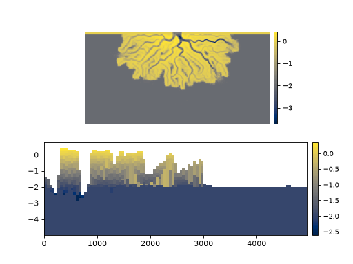

sandplover.cube.DataCube¶
- class sandplover.cube.DataCube(data, auxdata=None, read=(), varset=None, stratigraphy_from=None, dimensions=None)¶
DataCube object.
DataCube contains t-x-y information. It may have any number of attached attributes (grain size, mud frac, elevation).
- __init__(data, auxdata=None, read=(), varset=None, stratigraphy_from=None, dimensions=None)¶
Initialize the BaseCube.
- Parameters:
data (
str,dict) – If data is type str, the string points to a NetCDF or HDF5 file that can be read. Typically this is used to directly import files output from the pyDeltaRCM model. Alternatively, pass adictwith keys indicating variable names, and values with corresponding t-x-y ndarray of data.auxdata (
str,dict, optional) – If data is a str pointing to a file, then auxdata shall be a string specifying a group within the file with auxiliary information. If data is a dictionary, auxdata may be either another dictionary with auxiliary information, or a str specifying a key within data to be treated as auxiliary informationl; note that the last case does not remove the key from data variables. Default is None, no auxiliary information.read (
bool, optional) – Which variables to read from dataset into memory. Special option forread=Trueto read all available variables into memory.varset (
VariableSet, optional) – Pass a ~sandplover.plot.VariableSet instance if you wish to style this cube similarly to another cube. If no argument is supplied, a new default VariableSet instance is created.stratigraphy_from (
str, optional) – Pass a string that matches a variable name in the dataset to compute preservation and stratigraphy using that variable as elevation data. Typically, this is'eta'in pyDeltaRCM model outputs. Stratigraphy can be computed on an existing data cube with thestratigraphy_from()method.dimensions (dict, optional) – A dictionary with names and coordinates for dimensions of the DataCube, if instantiating the cube from data loaded in memory in a dictionary.
Methods
__init__(data[, auxdata, read, varset, ...])Initialize the BaseCube.
export_frozen_variable(var[, return_cube])Export a cube with frozen values.
quick_show(var[, idx, axis])Convenient and quick way to show a slice of the cube by idx and axis.
read(variables[, force])Read variable into memory.
register_plan(*args, **kwargs)wrapper, might not really need this.
register_planform(name, PlanformInstance[, ...])Register a planform to the
planform_set.register_section(name, SectionInstance[, ...])Register a section to the
section_set.register_variable(name, data)Register a variable to the cube.
set_aux(auxdata)Set a group of the DataIO layer as the 'aux' group.
show_cube(var[, style, ve, ax])Show the cube in a 3D axis.
show_plan(*args, **kwargs)Deprecated.
show_planform(name, variable, **kwargs)Show a registered planform by name and variable.
show_section(name, variable, **kwargs)Show a registered section by name and variable.
stratigraphy_from([variable, style])Compute stratigraphy attributes.
Attributes
Number of elements, vertical (height) coordinate.
Number of elements, length coordinate.
Time mesh.
Number of elements, width coordinate.
Vertical mesh.
auxsimple alias
List of coordinate names as strings.
Path connected to for file IO.
Data I/O handler.
Coordinates along the first dimension of cube.
Coordinates along the second dimension of cube.
Coordinates along the third dimension of cube.
The limits of the dim1 by dim2 plane.
The extent, reversed up-down for special plotting.
A dummy variable of zeros with shape of extent.
metaSet of planform instances.
Set of plan instances.
List of variable names as strings, subset to those registered (i.e., not in the underlying data).
Set of section instances.
Set of section instances.
Number of elements in data (HxLxW).
stratatime coordinate.
Variable available to DataCube.
Variable styling for plotting.
Vertical coordinate.
- property H¶
Number of elements, vertical (height) coordinate.
- property L¶
Number of elements, length coordinate.
- property T¶
Time mesh.
This is a three-dimensional representation of the time coordinate of the DataCube. Every element of each row (i.e., layer) of the returned array is filled with the corresponding time coordinate value.
- property W¶
Number of elements, width coordinate.
- property Z¶
Vertical mesh.
- __getitem__(var)¶
Return the variable.
Overload slicing operations for io to return a
CubeVariableinstance when slicing.- Parameters:
var (
str) – Which variable to slice.- Returns:
CubeVariable – The instantiated CubeVariable.
- Return type:
~sandplover.cube.CubeVariable
- property auxdata¶
simple alias
- property coords¶
List of coordinate names as strings.
- Type:
list
- property data_path¶
Path connected to for file IO.
Returns a string if connected to file, or None if cube initialized from
dict.- Type:
str
- property dim0_coords¶
Coordinates along the first dimension of cube.
- property dim1_coords¶
Coordinates along the second dimension of cube.
- property dim2_coords¶
Coordinates along the third dimension of cube.
- export_frozen_variable(var, return_cube=False)¶
Export a cube with frozen values.
Creates a H x L x W ndarray with values from variable var placed into the array. This method is particularly useful for inputs to operation that will repeatedly utilize the underlying data in computations. Access to underlying data is comparatively slow to data loaded in memory, because the Cube utilities are configured to read data off-disk as needed.
- property extent¶
The limits of the dim1 by dim2 plane.
Useful for plotting.
- property extent_flipud¶
The extent, reversed up-down for special plotting.
limits of the dim1 by dim2 plane,
- property extent_zeros¶
A dummy variable of zeros with shape of extent.
Returns an array of zeros with the shape of the cube.
- property planform_set¶
Set of planform instances.
- Type:
dict
- property planforms¶
Set of plan instances.
Alias to
planform_set().- Type:
dict
- quick_show(var, idx=-1, axis=0, **kwargs)¶
Convenient and quick way to show a slice of the cube by idx and axis.
Hint
If neither idx or axis is specified, a planform view of the last index is shown.
- Parameters:
var (
str) – Which variable to show from the underlying dataset.idx (
int, optional) – Which index along the axis to slice data from. Default value is-1, the last index along axis.axis (
int, optional) – Which axis of the underlying cube idx is specified for. Default value is0, the first axis of the cube.**kwargs – Keyword arguments are passed to
show()if axis is0, otherwise passed toshow().
Examples
>>> import matplotlib.pyplot as plt >>> from sandplover.cube import StratigraphyCube >>> from sandplover.sample_data.sample_data import golf
>>> golfcube = golf() >>> golfstrat = StratigraphyCube.from_DataCube(golfcube, dz=0.1) >>> fig, ax = plt.subplots(2, 1) >>> golfcube.quick_show("eta", ax=ax[0]) # a Planform (axis=0) >>> golfstrat.quick_show("eta", idx=100, axis=2, ax=ax[1]) # a DipSection
(
Source code,png,hires.png)
- read(variables, force=False)¶
Read variable into memory.
- Parameters:
variables (
listofstr,str,bool) – Which variables to read into memory. Pass True to read all available variables.force (bool, optional) – If True, bypass memory safety checks and load the data regardless of size. Default is False.
Warning
If any variable size exceeds 80% of currently available RAM and force=False, a warning will be issued for that variable and it will NOT be loaded into memory. Set force=True to override this check.
- register_plan(*args, **kwargs)¶
wrapper, might not really need this.
- register_planform(name, PlanformInstance, return_planform=False)¶
Register a planform to the
planform_set.Connect a planform to the cube.
- Parameters:
name (
str) – The name to register the Planform.PlanformInstance (
BasePlanformsubclass instance) – The planform instance that will be registered.return_planform (
bool) – Whether to return the planform object.
- register_section(name, SectionInstance, return_section=False)¶
Register a section to the
section_set.Connect a section to the cube.
- Parameters:
name (
str) – The name to register the section.SectionInstance (
BaseSectionsubclass instance) – The section instance that will be registered.return_section (
bool) – Whether to return the section object.
Notes
When the API for instantiation of the different section types is settled, we should enable the ability to pass section kwargs to this method, and then instantiate the section internally. This avoids the user having to specify
spl.section.StrikeSection(distance=2000)in theregister_section()call, and instead can do something likegolf.register_section('trial', trace='strike', distance=2000).
- register_variable(name, data)¶
Register a variable to the cube.
Add a variable to the cube, which can be accessed and sliced identically to underlying data.
This is generally useful for data that are derived in the course of analyses (i.e., not a part of the original dataset) but are useful (in a general sense) for subsequent analyses.
Only variables with identical dimensionality to the underlying dataset can be registered. Registered variables should not be modified after registration, but can be easily used in subsequent analysis.
Important
Registered variables are stored in memory, and are not recorded to underlying data!
- Parameters:
name (
str) – The name to register the variable.data (
xr.DataArrayornp.ndarray) – The data to register. Must have same dimensionality as underying data variables.
Examples
See the example document Registering Custom Variables to Cubes.
>>> from sandplover.sample_data.sample_data import golf
>>> golfcube = golf() >>> golfcube.register_variable("somevar", np.zeros(golfcube.shape))
A list of registered variables can be accessed with:
>>> golfcube.registered_variables ['somevar']
- property registered_variables¶
List of variable names as strings, subset to those registered (i.e., not in the underlying data).
- Type:
list
- property section_set¶
Set of section instances.
- Type:
dict
- property sections¶
Set of section instances.
Alias to
section_set().- Type:
dict
- set_aux(auxdata)¶
Set a group of the DataIO layer as the ‘aux’ group.
- property shape¶
Number of elements in data (HxLxW).
- show_cube(var, style='mesh', ve=200, ax=None)¶
Show the cube in a 3D axis.
Important
requires pyvista package for 3d visualization.
- Parameters:
var (
str) – Which variable to show from the underlying dataset.style (
str, optional) – Style to show cube. Default is ‘mesh’, which gives a 3D volumetric view. Other supported option is ‘fence’, which gives a fence diagram with one slice in each cube dimension.ve (
float) – Vertical exaggeration. Default is200.ax (
Axesobject, optional) – A matplotlib Axes object to plot the section. Optional; if not provided, a call is made toplt.gca()to get the current (or create a new) Axes object.
Examples
Note
The following code snippets are not set up to actually make the plots in the documentation.
>>> import matplotlib.pyplot as plt >>> from sandplover.cube import StratigraphyCube >>> from sandplover.sample_data.sample_data import golf
>>> golfcube = golf() >>> golfstrat = StratigraphyCube.from_DataCube(golfcube, dz=0.1) >>> fig, ax = plt.subplots() >>> golfstrat.show_cube("eta", ax=ax)
>>> golfcube = golf() >>> fig, ax = plt.subplots() >>> golfcube.show_cube("velocity", style="fence", ax=ax)
- show_plan(*args, **kwargs)¶
Deprecated. Use
quick_showorshow_planform.Warning
Provides a legacy option to quickly show a planform, from before the Planform object was properly implemented. Will be removed in a future release.
- show_planform(name, variable, **kwargs)¶
Show a registered planform by name and variable.
Call a registered planform by name and variable.
- Parameters:
name (
str) – The name of the registered planform.variable (
str) – The varaible name to show.**kwargs – Keyword arguments passed to
show().
- show_section(name, variable, **kwargs)¶
Show a registered section by name and variable.
Call a registered section by name and variable.
- Parameters:
name (
str) – The name of the registered section.variable (
str) – The varaible name to show.**kwargs – Keyword arguments passed to
show().
- stratigraphy_from(variable='eta', style='mesh', **kwargs)¶
Compute stratigraphy attributes.
- Parameters:
variable (
str, optional) – Which variable to use as elevation data for computing preservation. If no value is given for this parameter, we try to find a variable eta and use that for elevation data if it exists.style (
str, optional) – Which style of stratigraphy to compute, options are'mesh'or'boxy'. Additional keyword arguments are passed to stratigraphy attribute initializers.**kwargs – Keyword arguments passed to stratigraphy initialization. Can include specification for vertical resolution in Boxy case, see :obj:_determine_strat_coordinates`.
- property t¶
time coordinate.
This is a one-dimensional array of the time coordinates of the DataCube.
- property variables¶
Variable available to DataCube.
Includes only underlying data available from DataIO layer and registered variables.
- property varset¶
Variable styling for plotting.
Can be set with
cube.varset = VariableSetInstancewhereVariableSetInstanceis a valid instance ofVariableSet.- Type:
- property z¶
Vertical coordinate.
{kind=link}
{kind=link}